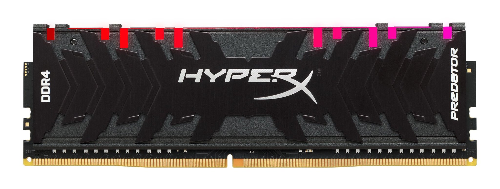

Динамическая

Экономичный вид памяти. Для хранения разряда (бита или трита) используется схема, состоящая из одного конденсатора и одного транзистора (в некоторых вариантах два конденсатора). Такой вид памяти, во-первых, дешевле (один конденсатор и один транзистор на 1 бит дешевле нескольких транзисторов триггера), и, во-вторых, занимает меньшую площадь на кристалле (там, где в SRAM размещается один триггер, хранящий 1 бит, можно разместить несколько конденсаторов и транзисторов для хранения нескольких бит). Но DRAM имеет и недостатки. Во-первых, работает медленнее, поскольку, если в SRAM изменение управляющего напряжения на входе триггера сразу очень быстро изменяет его состояние, то для того, чтобы изменить состояние конденсатора, его нужно зарядить или разрядить. Перезаряд конденсатора гораздо более длителен (в 10 и более раз), чем переключение триггера, даже если ёмкость конденсатора очень мала. Второй существенный недостаток — конденсаторы со временем разряжаются. Причём разряжаются они тем быстрее, чем меньше их электрическая ёмкость и больше ток утечки, в основном, утечка через ключ.
Именно из-за того, что заряд конденсатора динамически уменьшается во времени, память на конденсаторах получила своё название DRAM — динамическая память. Поэтому, дабы не потерять содержимое памяти, заряд конденсаторов периодически восстанавливается («регенерируется») через определённое время, называемое циклом регенерации (обычно 2 мс). Для регенерации в современных микросхемах достаточно выполнить циклограмму «чтения» по всем строкам запоминающей матрицы. Процедуру регенерации выполняет процессор или контроллер памяти. Так как для регенерации памяти периодически приостанавливается обращение к памяти, это снижает среднюю скорость обмена с этим видом ОЗУ.
На данный момент существует 5 различных стандартов (поколений) ОП: SDRAMM DIMM, DDR (или PC), DDR2 (PC-2), DDR3 (PC-3) и DDR4 (PC-4), из которых актуальны сегодня три последних. Не трудно догадаться, что с увеличением цикла, сами модули также усовершенствовались. В первую очередь, улучшались характеристики памяти: увеличивались тактовая частота шины и используемый объем, уменьшалась задержка (тайминг). Подобная эволюция позволяет запускать более ресурсоёмкие программы, вычислять процессы в многоканальном режиме (без просадок во времени).
